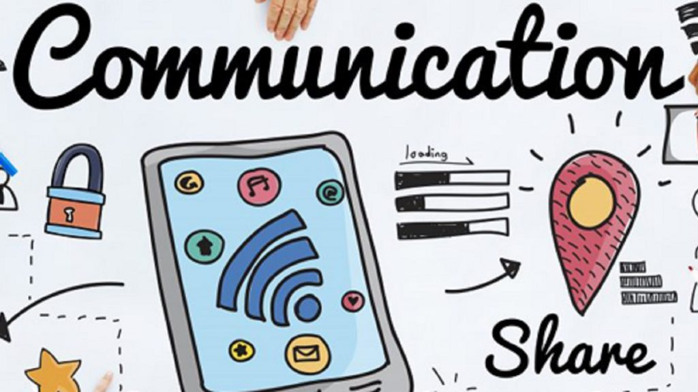

On this website you will learn how to communicate. La communication est primordiale! nous commmuniquons tous les jours. Communication verbal, non verbale, communication interne et externe. Vous allez ici apprendre tous les types de communication qui existe pour devenir un As de la communication! cette dernière n'aura plus de secret pour vous !
La communication, c’est l’action de communiquer, de transmettre, d’informer. Cette fonction désigne l’étude générale du langage sous trois aspects : l’expression (celui qui utilise ce type de communication cherche à communiquer une intention, une émotion, un état de conscience) ; la représentation (donne des informations sur les événements, retransmet un savoir) ; l’action sur autrui (cherche à convaincre, à séduire, à influencer autrui, transmet des ordres, intime des interdictions). La communication déborde l’expression verbale et utilise de nombreux signaux mimiques ou gestuels, des techniques nouvelles et de nouveaux supports (informatique, téléphone mobile, numérique...).
COURS